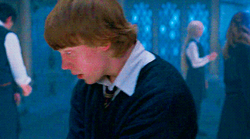

Dobby
Elfo leal aos amigos e muito corajoso, sempre disposto a colocar-se em situações de perigo quando necessário, mesmo que custe sua própria vida. Suas habilidades incluem: aparatação (mesmo em lugares proibidos), levitação e adulteração de objetos, explosões mágicas e desarmar adversários com um estalar de dedos.
Luna Lovegood
Garota com extraordinária percepção e destemida. Sempre muito serena, mesmo em situações difíceis. Suas habilidades incluem extrema capacidade defensiva contra as artes das trevas, duelista altamente componente, talento superior para feitiços avançados, trato de criaturas mágicas e alta capacidade de liderança.
Ronald Weasley
Garoto bastante leal, corajoso e com senso de humor sarcástico e brincalhão. É contra provocações e muito argumentativo em suas discussões. Suas habilidades incluem extremo talento em xadrez, capacidade inata para adivinhações, alto conhecimento em herbologia, domínio de magia não-verbal e na defesa contra a arte das trevas.